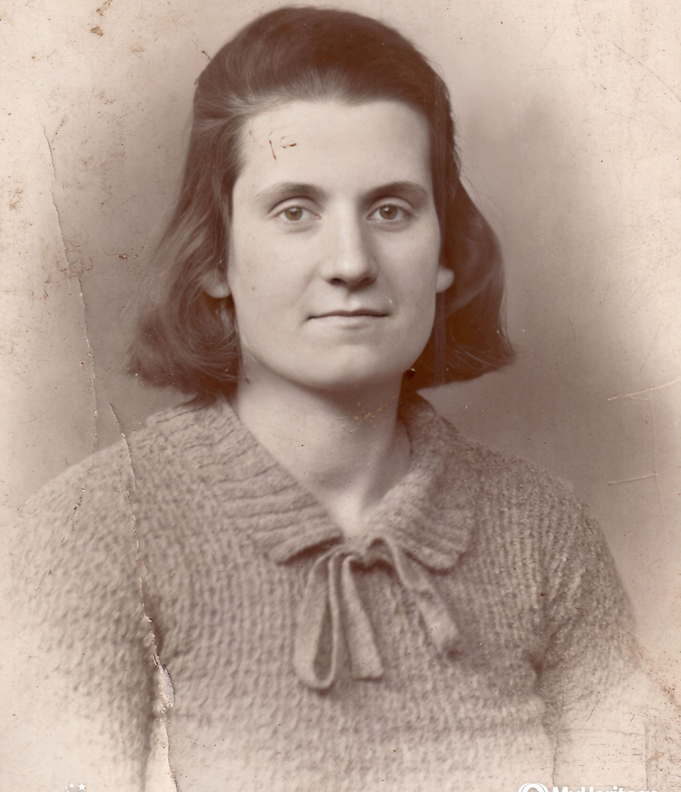
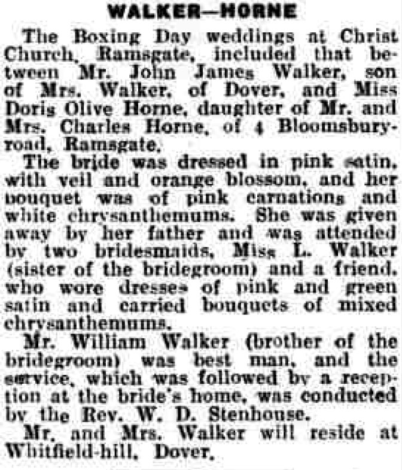
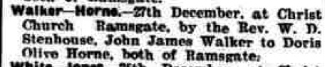
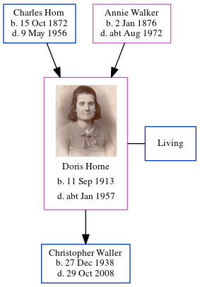

Doris Olive Waller (née Horne) 1913 - c1957
[ Home ] | [ Calendar ] | [ Surnames Index ] | [ Census Index ] | [ Family History ]The child of Charles Horn (a fisherman) and Annie Walker, Doris Horne, the second cousin twice-removed on the father's side of Nigel Horne, was born in Thanet, Kent, England on Sep 11, 19131,2 and married John Waller (with whom she had 1 child, Christopher John) at Christ Church, Vale Square, Ramsgate, Kent, England on Dec 27, 19374.
During her life, she was living at Bloomsbury Road, St Lawrence in Thanet on Jun 19, 19217; and on Sandwich Road, Whitfield, Kent on Sep 29, 19391.
She died c. Jan 1957 in Dover, Kent, England3 and was buried at St Peter, Whitfield, Kent on Jan 24, 19575,6.
Parents
- Charles was born on Oct 15, 1872
- Annie Elizabeth was born on Jan 2, 1876
Children
- Christopher John was born on Dec 27, 1938
Citations
- 1939 Register - Findmypast (was recorded at this address)
- England & Wales births 1837-2006 - Findmypast
- England & Wales deaths 1837-2007 - Findmypast
- England & Wales Marriages 1837-2005 - Findmypast
- Kent Burials - Findmypast
- England Deaths & Burials 1538-1991 - Findmypast
- 1921 Census Of England & Wales - Findmypast (was age 7 and the daughter of the head of the household)
Media
Doris Olive Horne

Thanet Advertiser - 29 Dec 1937

Thanet Advertiser - 31 Dec 1937

England & Wales births 1837-2006 - BMD/B/1913/4/AZ/000717/103
England & Wales marriages 1837-2005 - BMD/M/1937/4/AZ/000605/038
England & Wales deaths 1837-2007 - BMD/D/1957/1/AZ/001160/030
Kent Burials - GBPRS/CANT/D/95324260
England Deaths & Burials 1538-1991 - R_276816648
1939 Register - TNA/R39/1814/1814E/012/25
Family Tree
Generated by ged2site. Last updated on Jun 11, 2024